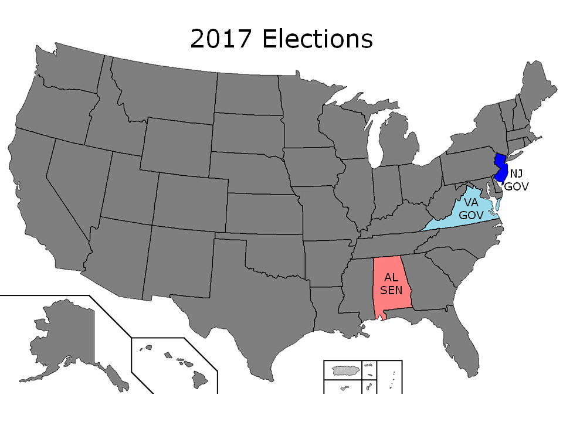

This year I'm writing a completely new model to forecast elections after my extremely disasterous 2016 model utterly failed to even remotely predict the correct outcome. The model I'm currently working on uses regression techniques and Monte Carlo methods to predict the election outcome based on polling data. Moreover, this model will be probabilistic as well as deterministic, since probabilistic models, as last year's election models show, do a much better job at accounting for uncertainty in an election outcome. This model will be called the 2018 model - because the purpose of me doing this now is to test it on a few off-year elections to see how well it works so that I have a fully functioning model for the midterm elections next year. However, I have also included my old and simple 2012 model this year. We'll see which one triumphs. However, do note that the Alabama Senate election is not until December 12, so the model for that race will change as time gets closer.

| Race | Democrat | Republican | Expected Margin | Probability | Prediction |
| Alabama Senate | Doug Jones | Roy Moore | Moore +2.7 | 70.9% | Leans R |
| New Jersey Governor | Phil Murphy | Kim Guadagno | Murphy +14.5 | 97.9% | Safe D |
| Virginia Governor | Ralph Northam | Ed Gillespie | Northam +1.3 | 58.8% | Leans D |
| Race | Democrat | Republican | Spread | Prediction |
| Alabama Senate | Doug Jones | Roy Moore | Moore +3.6 | Leans R |
| New Jersey Governor | Phil Murphy | Kim Guadagno | Murphy +14.8 | Safe D |
| Virginia Governor | Ralph Northam | Ed Gillespie | Northam +3.2 | Leans D |
Off-year major statewide elections include the following:
Alabama Senate (Moore +2.7, 70.9% chance). There's a special election this year to replace former Sen. Jeff Sessions (R), who resigned his seat upon his confirmation as Attorney General. This election took a turn in the primaries when former Alabama Chief Justice Roy Moore defeated incumbent Sen. Luther Strange (R), the establishment candidate appointed by then-Gov. Robert Bentley (R) and endorsed by President Donald Trump. Since then, this race has been surprisingly close between Moore and Democratic nominee Doug Jones, especially after allegations surfaced regarding Moore's past. Nonetheless, it is still an uphill battle for a Democrat to win statewide in Alabama. The last Democrat to have won a Senate race here was Richard Shelby in 1992, and Shelby is the current Republican Senator from this state. Heading into the election, this race remains uncertain. The election result depends on turnout, and it's possible for Jones to pull an upset victory.
New Jersey Governor (Murphy +14.5, 97.9% chance). This prediction should surprise no one in a deep blue state, especially with the exceptional unpopularity of incumbent Gov. Chris Christie (R) and the Bridgegate scandal. Murphy is heavily favored to win here. However, New Jersey is a state to keep an eye on for next year's midterm elections given Sen. Bob Menendez's (D) corruption trial. Menendez's seat is up in 2018, and the Republicans could flip this seat red if the Democrats aren't careful. Moreover, there's a chance that Menendez may resign before the new governor can be inaugurated, potentially allowing Gov. Chris Christie to appoint a Republican, maybe even himself, to the seat.
Virginia Governor (Northam +1.3; 58.8% chance). Lt. Gov. Ralph Northam (D), running to replace the term-limited Gov. Terry McAuliffe (D), is in a close match against former RNC chair Ed Gillespie (R). Polls have been showing about a steady 3 point lead for Northam, but no one should be underestimating Ed Gillespie here. The last time Gillespie ran a campaign in Virginia for Senate in 2014, polls showed him losing to Sen. Mark Warner (D) by about 10 points, but Warner only narrowly defeated Gillespie by less than a point. This is still a very uncertain race, and Gillespie still has a very strong chance of winning here.
For the record, I added this section after the votes were counted. One last point I want to emphasize is why I'm really pushing a probabilistic rather than a deterministic model this time around. The reason is that an election result can be a bit different from the expected margin, but still within the bell curve of expected results. For example, take this year's Virginia gubernatorial election. The model's expected margin was Northam +1.3, but the actual result was Northam +8.9. If you just look at the expected margin, it looks like the model was 8 points off, but if you look at the bell curve graph below, it's still within the margin of error. This goes to testify how much uncertainty there can be with these models.